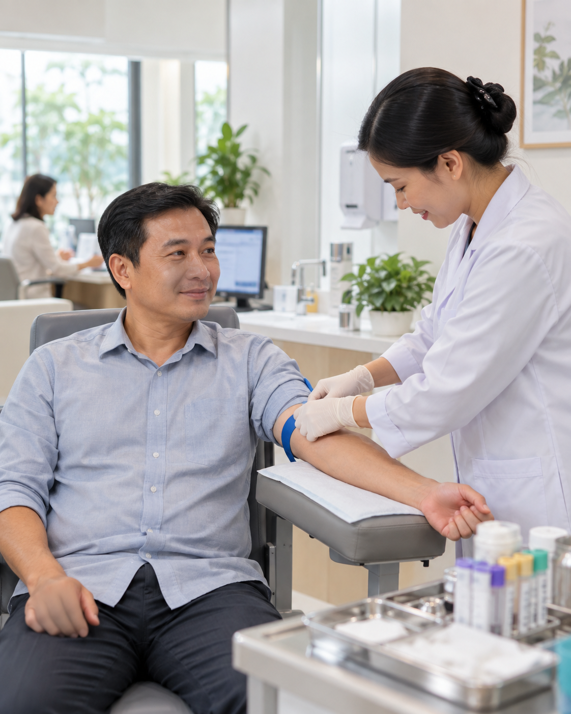

Đường huyết và HbA1c
Glucose lúc đói và HbA1c hỗ trợ bác sĩ đánh giá các chỉ số đường huyết tại thời điểm khám và trong giai đoạn gần đây.
Gói kết hợp khám, siêu âm và xét nghiệm để cung cấp thông tin ban đầu về đường huyết, mỡ máu, nước tiểu và những chỉ số cần được bác sĩ đánh giá thêm.

Đái tháo đường có thể tiến triển âm thầm. Các hạng mục trong gói cung cấp thông tin để bác sĩ kết hợp với tình trạng thực tế và tư vấn hướng xử trí phù hợp.
Glucose lúc đói và HbA1c hỗ trợ bác sĩ đánh giá các chỉ số đường huyết tại thời điểm khám và trong giai đoạn gần đây.
Cholesterol, Triglyceride, HDL-C và LDL-C cung cấp thông tin về các chỉ số lipid máu cần được bác sĩ xem xét.
Tổng phân tích nước tiểu và Microalbumin niệu bổ sung thông tin để bác sĩ đánh giá các dấu hiệu cần theo dõi thêm.
| STT | Danh mục / Xét nghiệm | Giá dịch vụ |
|---|---|---|
| I. Khám lâm sàng | ||
| 1 | Khám chuyên khoa Nội tổng quát / Nội tiết | 200.000 VNĐ |
| II. Chẩn đoán hình ảnh | ||
| 2 | Siêu âm tổng quát bụng | 200.000 VNĐ |
| III. Xét nghiệm máu và sinh hóa | ||
| 3 | Bảng công thức máu toàn bộ (CBC) | 63.000 VNĐ |
| 4 | Đường huyết lúc đói (Glucose) | 41.000 VNĐ |
| 5 | HbA1c (Đường huyết trung bình 3 tháng) | 155.000 VNĐ |
| 6 | Cholesterol toàn phần (Total Cholesterol) | 41.000 VNĐ |
| 7 | Triglyceride | 41.000 VNĐ |
| 8 | HDL-Cholesterol (Mỡ tốt) | 51.000 VNĐ |
| 9 | LDL-Cholesterol (Mỡ xấu) | 51.000 VNĐ |
| IV. Xét nghiệm nước tiểu | ||
| 10 | Tổng phân tích nước tiểu (10 thông số) | 51.000 VNĐ |
| 11 | Microalbumin niệu (Định lượng đạm niệu vi lượng) | 120.000 VNĐ |
| TỔNG — Trọn gói chương trình | 1.014.000 VNĐ | |